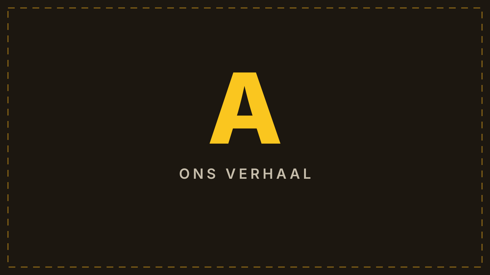
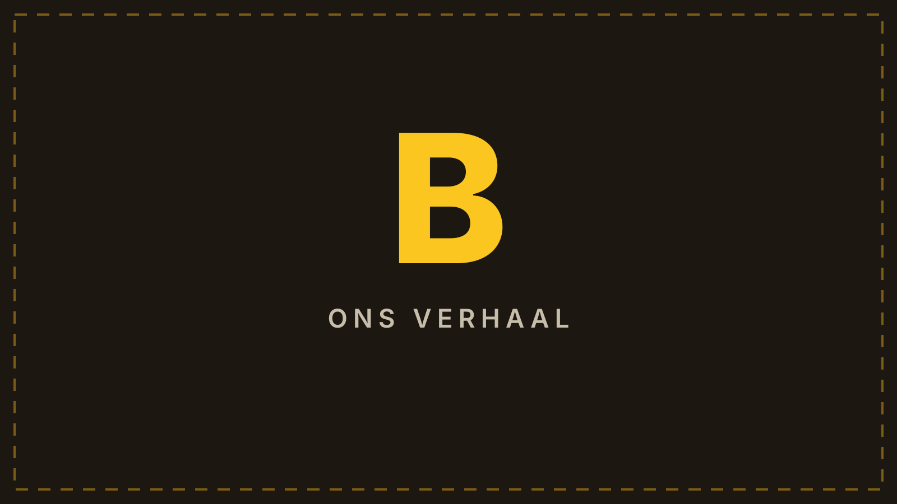

Eigen monteurs
Het werk wordt gedaan door de vaste, gecertificeerde monteurs van JTS Installatietechniek uit Soest. Geen wisselende ploegen die je adres niet kennen.
Ons verhaal
NuZon bestaat al ruim twaalf jaar. Dat verhaal begint niet bij ons. Het begint bij Michel Zieleman.
01
Michel bouwde NuZon op in een tijd dat zonnepanelen voor de meeste mensen nog iets nieuws waren. Hij hielp mensen aan een installatie die deed wat hij beloofd had, en hij bleef daarna bereikbaar. Ook als het telefoontje drie jaar later kwam, omdat er iets niet meer deed wat het moest doen.
Veel van die klanten zijn er al die jaren gebleven. Dat zegt genoeg.
Sinds januari zijn wij, Tjark Boot, Jesse Odijk en Stijn Ronner, de nieuwe eigenaren. Niet om er iets heel anders van te maken. Maar om ervoor te zorgen dat de mensen die Michel al die jaren geholpen heeft, geholpen blijven worden.
02
Wij runnen daarnaast JTS Installatietechniek, opgericht in december 2022. Zonnepanelen, batterijen, laadpalen, meterkasten en complete elektrotechnische installaties voor hele gebouwen.
Michel had werk liggen en zocht een partij die het goed uitvoerde. Zo kwamen we bij elkaar terecht: NuZon als opdrachtgever, JTS als uitvoerder. Een paar projecten, netjes afgerond, geen gedoe.
Wat hij zag: drie gasten die toen nog maar drie jaar bezig waren. Die vragen stelden in plaats van aannames deden. Die het niet erg vonden om iets over te doen als het beter kon. Die op tijd kwamen en terugbelden. En die nog dat vuur hadden dat hij zelf ook had toen hij begon. Die honger om iets op te bouwen dat van jezelf is.
Wat wij zagen: iemand die zijn klanten bij naam kende. Die precies wist welke installatie waar lag en waarom er destijds voor dat merk gekozen was. Twaalf jaar aan mensen, verhalen en keuzes, allemaal in één hoofd.
En zijn hond gaat overal mee. Op locatie, bij klanten, gewoon standaard erbij. Dat zegt eigenlijk best veel over hoe Michel werkt.

03
Op een dag vertelde Michel ons dat hij ging verkopen. Zijn gezondheid liet het niet meer toe om er voor iedereen te zijn zoals hij dat gewend was.
Dat is een rotmoment voor iemand die zijn bedrijf van niets heeft opgebouwd. En het bijzondere is: waar hij het meest mee zat, was niet de prijs. Het was de vraag wie zijn klanten straks zou opvangen. Mensen die hem al tien jaar belden. Mensen die op zijn woord waren afgegaan.
Hij wilde het achterlaten bij iemand die het serieus zou nemen. Hij vroeg het aan ons.
Na een aantal goede gesprekken en heldere afspraken zijn we samen naar de notaris gegaan. Sinds januari is NuZon van ons.
En Michel is gebleven. Niet op papier, wel in de praktijk. Hij denkt mee, geeft advies als we ergens tegenaan lopen en vraagt uit zichzelf hoe het gaat met het bedrijf en met de klanten. Die betrokkenheid is oprecht en we zijn er blij mee. Twaalf jaar kennis over installaties, merken en mensen haal je nergens anders vandaan.
04
Er werkt niemand in loondienst bij NuZon. Dat is een bewuste keuze. NuZon is de naam, de historie en de klanten. JTS Installatietechniek doet het werk. Hetzelfde team, elke keer.
Het afgelopen jaar hebben we een hoop klanten geholpen. Mensen die er al jaren bij zijn en die geduld hadden met drie nieuwe eigenaren die de boel aan het leren kennen waren.
Wat ons opvalt: als de naam Michel valt, is de reactie vrijwel altijd positief. Hij heeft binnen zijn kennen en kunnen altijd het beste voorgehad met zijn klanten. Dat merken we terug. Dat vertrouwen hebben wij niet zelf opgebouwd, dus dat moeten we nog waarmaken.

05
We willen iedereen helpen. Maar we zijn er in de praktijk achter gekomen dat het niet altijd zonder meer kan.
Bij oudere installaties is er soms geen fabrieksgarantie meer. Merken die niet meer bestaan, onderdelen die niet meer geleverd worden, systemen die hun tijd hebben gehad. Dat is vervelend nieuws om te brengen en we snappen de teleurstelling.
Daar staat tegenover dat de meeste van deze installaties er al vele jaren liggen en in die tijd flink wat hebben opgeleverd. We kijken altijd wat er wél kan en komen met alternatieven. Wat we daarbij vragen is dat u financieel meedenkt. Niet omdat we moeilijk willen doen, maar omdat we alleen zo iedereen kunnen blijven helpen. Nu, en over vijf jaar nog steeds.
06
We hebben de smaak te pakken. NuZon krijgt een nieuwe website, een nieuw logo en een vast installatieteam. Niet omdat het oude niet goed was, maar omdat het bedrijf na twaalf jaar toe is aan een volgende stap.
Onze focus ligt niet op de korte termijn. We denken in jaren. In groei, in ontwikkeling en in klanten die blijven.
Michel heeft de basis gelegd. Wij bouwen erop verder.
Waar we voor staan
Het werk wordt gedaan door de vaste, gecertificeerde monteurs van JTS Installatietechniek uit Soest. Geen wisselende ploegen die je adres niet kennen.
Van de eerste berekening tot de oplevering en de jaren daarna houd je dezelfde contactpersoon. Ook als er meerdere partijen aan te pas komen.
We rekenen door wat er bij jóuw verbruik uitkomt, ook als het antwoord is dat je beter kunt wachten. Geen verkoper aan de deur.
Nuzon is zelf geen energieleverancier. We verdienen niets aan je contract, dus we kunnen gewoon zeggen wat verstandig is.